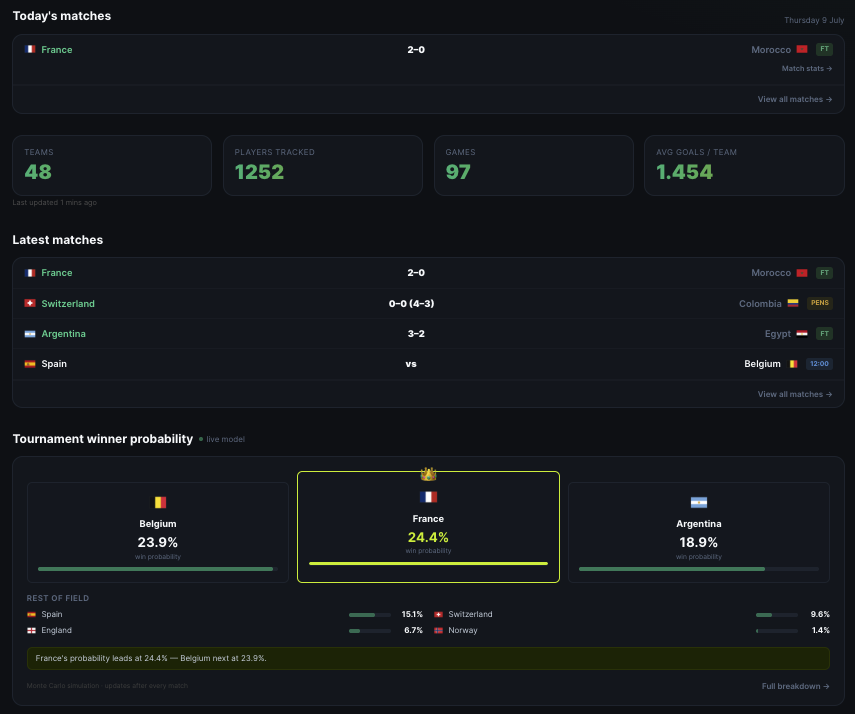
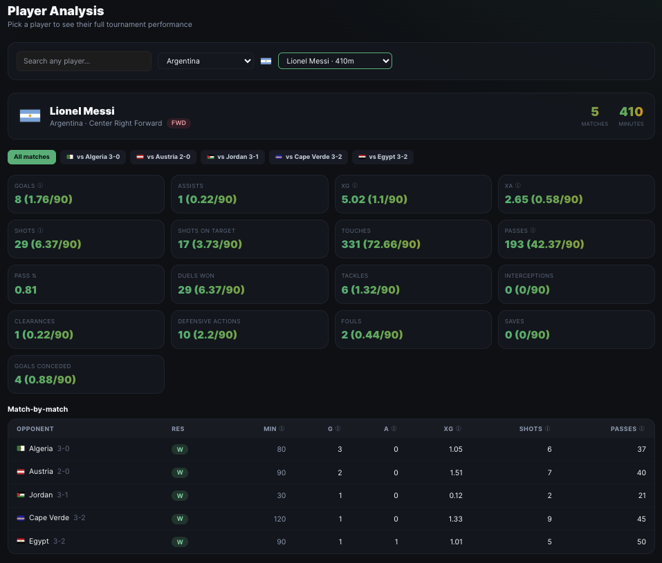
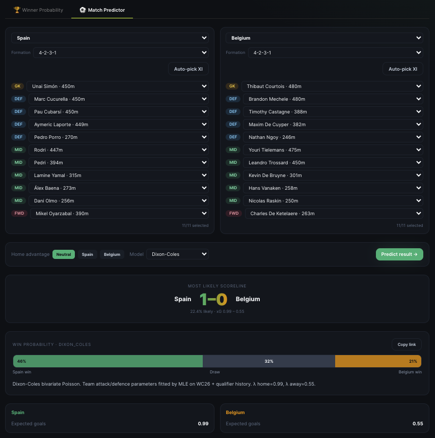
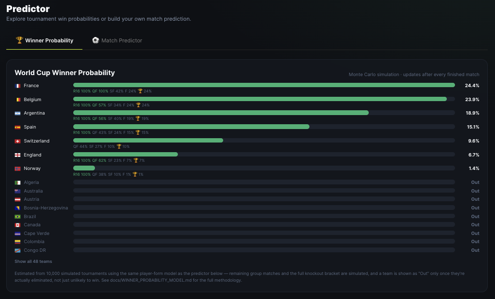
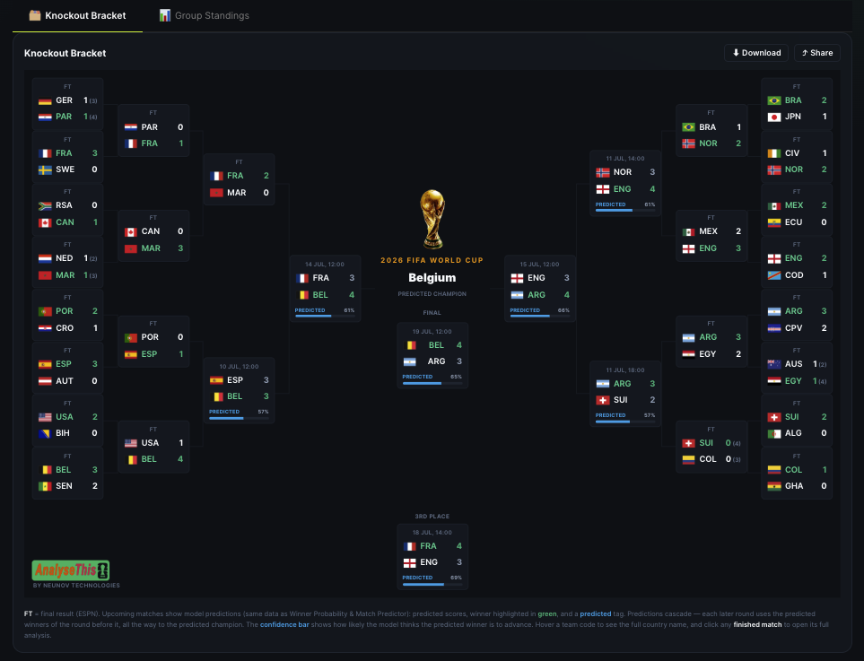
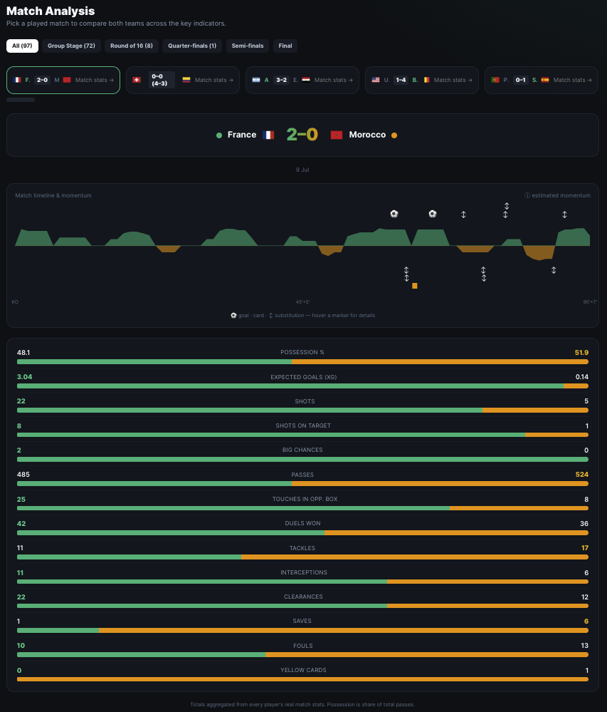
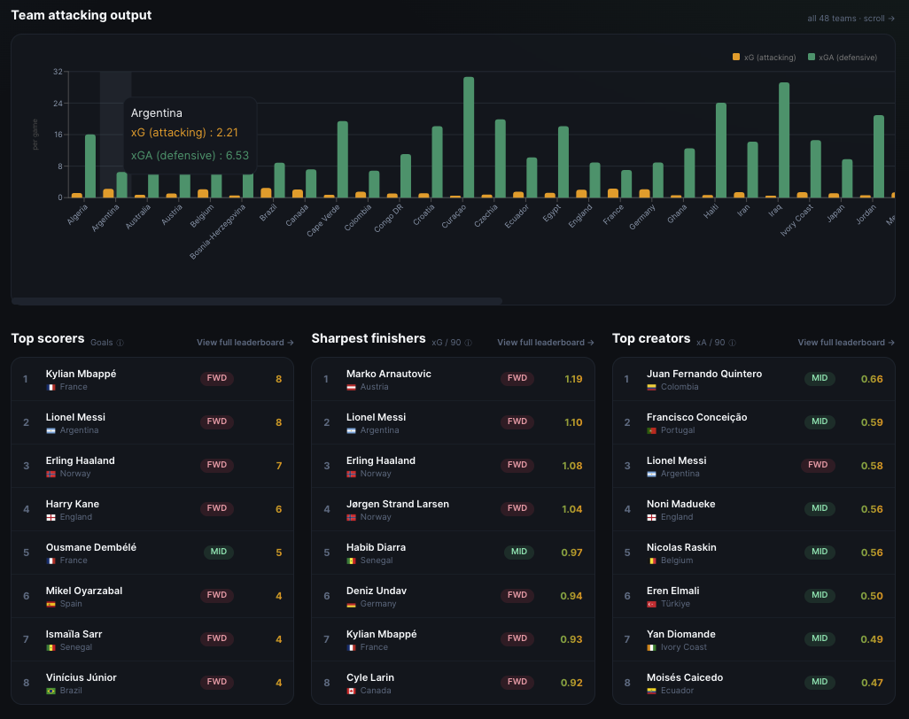

Every number on the site traces back to a real, scraped statistic. Every model is simple, transparent, and documented. And every model is validated by backtesting it on matches it never trained on — measured, not asserted. That combination is the whole point.
tracked
profiled
per match
models
tournaments
01 / THE PROJECTWhat AnalyseThisWC26 is
AnalyseThisWC26 is a live analytics and prediction platform for the 2026 FIFA World Cup, built and maintained by NeuNov Technologies. It turns real, continuously-refreshed tournament data into match analysis, player scouting profiles, live group standings, a full knockout bracket forecast, a head-to-head match predictor, and — the piece I'm proudest of — a Monte Carlo simulation that estimates each team's probability of winning the whole thing.
The guiding principle is simple to state and surprisingly rare in practice: real data plus transparent, defensible methodology, over black-box output. There are no synthetic or fabricated numbers anywhere on the site. Every stat, standing, and bracket slot is scraped from ESPN's public APIs — roughly 140 per-player metrics per match, real group tables, the real bracket structure, and about a year of qualifier and friendly history for all 48 competing teams.

02 / FOUNDATIONThe data foundation: real, not synthetic
Predictions are only as trustworthy as the data underneath them, so the platform starts there. An automated pipeline re-scrapes finished matches, fixture schedules, group standings, and the knockout bracket on a schedule. Crucially, it safely skips any match ESPN hasn't yet marked final — so an in-progress game never pollutes the dataset with partial stats — and it restarts the live service automatically, keeping every page current without manual intervention.
Beyond the tournament itself, the pipeline pulled in roughly a year of qualifier and international-friendly history — hundreds of real matches across UEFA, CONCACAF, CONMEBOL, CAF, and AFC — for one specific reason: so a player with limited tournament minutes still gets a statistically meaningful rating instead of an unreliable small-sample one.

03 / THE ENGINEOne rating engine, many models
Everything the platform predicts is built on the same base. For each player, real scraped per-match stats are normalised per 90 minutes so a substitute and a starter are compared fairly, then blended with history and shrunk as described above. An eleven is turned into three interpretable team numbers:
- Attack rating — a weighted sum of each attacker/midfielder's per-90 expected goals (weight 2.0), expected assists (1.5), big chances created (0.40), shots on target (0.30), and touches in the opponent's box (0.12).
- Defense rating — a weighted sum of per-90 interceptions (0.40), duels won (0.35), clearances (0.30), tackles (0.30), ball recoveries (0.18), and defensive interventions (0.12).
- Goalkeeping factor — driven by the keeper's per-90 goals prevented (shot-stopping above expectation, weight 1.2) plus saves (0.10).
Each player's contribution is scaled by their role, and the whole team is normalised against a league-average eleven so an average team lands at ~1.0. That's what makes a rating of 1.3 mean "30% above the tournament's average attack" — an interpretable, defensible number rather than an arbitrary score. Every weight is visible in the code; nothing here is a black box.
04 / PREDICTIONThe match predictor: three models, one default
Pick two teams, build an eleven for each, and the predictor returns win/draw/loss probabilities, an expected scoreline, and a radar comparison. Rather than trust a single opinion, it runs three independent statistical models side by side:
- Dixon-Coles (the default). The academic and industry standard for football scorelines. Each team has an attack and defence strength fitted by maximum likelihood to real match results, plus a home-advantage term and the Dixon-Coles low-score correction that repairs how a naive independent-Poisson model mis-predicts 0–0 / 1–0 / 1–1 outcomes. Because its parameters are fitted to who actually won, it's the best-calibrated of the three.
- Player-Poisson (the original model). Each side's expected goals is
league-avg × own attack ÷ opp defense ÷ opp keeper, with a ×1.10 home multiplier, fed through the Poisson distribution to build the full scoreline grid. Every input is a real per-90 stat and every weight is transparent — but the weights are hand-set, not fitted to outcomes, which (as the backtest shows) makes it less calibrated. - Elo. A classic team-rating system: one strength number per team, updated after every result, converted to a match probability via the standard formula. Simple, robust, and a reliable sanity check.

05 / CREDIBILITYValidation: backtesting in the open
This is the part that turns "trust our model" into "here's the evidence," and it's the feature I'd point any skeptical engineer to first. Every model is trained only on matches before a cutoff date, then scored on the matches after it — real games it never saw — using the standard forecasting metrics (log-loss, Brier score, three-way accuracy) against two reputation-free baselines: a uniform 1/3–1/3–1/3 guess and the historical home/draw/away base rate.
| Model | Three-way accuracy | Fitted to outcomes? | Shipped? |
|---|---|---|---|
| Dixon-Coles | ~59% (best log-loss) | Yes — MLE | ✓ default |
| Elo | Beats baseline | Yes — iterative | ✓ |
| Base-rate baseline | ~51% | — | reference only |
| Player-Poisson | Below baseline | No — hand-tuned | ✓ (shown for transparency) |
| XGBoost | Did not beat Dixon-Coles | Yes — gradient boosting | ✗ deliberately dropped |
Two decisions fell straight out of this table. First, the best model became the default — Dixon-Coles leads, so the site leads with it, a choice driven by measured performance rather than by which model was built first. Second, a gradient-boosted XGBoost model was built, backtested the same way, and deliberately not shipped because it didn't beat Dixon-Coles out-of-sample. Complexity only earns its place if it demonstrably improves accuracy.
06 / SIMULATIONWinner probability: 10,000 tournaments
The single-match predictor answers "who wins this game?" The winner-probability model answers a much harder question — "who wins the whole tournament?" — and it does so the way FiveThirtyEight- and Opta-style public models do: by simulating the entire rest of the tournament 10,000 times.
In each trial, the model plays out every remaining group match (a random Poisson draw from the predictor's lambdas, not the expected score), ranks all 12 groups by the real tiebreak, picks the best 8 of 12 third-placed teams for the expanded 48-team format, resolves every knockout slot, and simulates Round-of-32 through the Final. A team's title probability is simply the fraction of the 10,000 simulated tournaments it wins. Team ratings are computed once and reused across every trial, which is what keeps ten thousand × ~56 matches fast.

Two engineering details here are worth calling out, because both came from taking the problem seriously:
The second: a Poisson draw in a knockout match — where a draw is impossible — is resolved by a coin flip weighted by each side's expected-goal share, a deliberate, disclosed proxy for extra time and penalties rather than a full shootout model. Every simplification like this (neutral venues, Points→GD→GF tiebreaks, 10,000 trials) is written down in the methodology doc alongside a concrete roadmap to improve it. Documented, not hidden.
07 / THE HARD PARTThe knockout bracket, reverse-engineered
FIFA's 48-team format has a famously fiddly rule for which group's third-place finisher fills which knockout slot. The easy path would have been to hand-copy FIFA's official bracket sheet. Instead, the pipeline empirically discovered that ESPN's API encodes each match's bracket position implicitly, and verified the full feeder chain — R32 → R16 → QF → SF → Final, plus the third-place match's "Loser" links — against live data before relying on it.
The feeder map is pinned by (round, position) because ESPN progressively rewrites placeholder slots into concrete team names as rounds finish; pinning keeps the geometry correct throughout. On the page, the bracket is deterministic (so it's stable between refreshes): it uses real results for completed matches, and for each upcoming tie shows the Poisson most-likely score and a confidence bar — the winner's probability of advancing (win probability plus its share of the draw). Predicted winners cascade forward, so every round including the Final has a prediction. Finished matches click through to full analysis, and the whole bracket downloads as a single branded image.

08 / ANALYSISMatch & player analysis
Prediction is half the platform; understanding what actually happened is the other half. Every played match gets a head-to-head comparison across the key indicators, a timeline of goals, cards, and substitutions, and a momentum wave.
That momentum ribbon is worth a caveat, because honesty about method matters: it's our own clearly-labelled heuristic, not an ESPN metric. It weights only real, scraped attacking events per minute — goal 6.0, shot on target 3.0, blocked shot 1.5, off-target shot 1.0, corner 1.0, offside 0.5 — then applies a ±2-minute moving-average smooth. It's explicitly presented as an approximation built from real event data, with the weights visible in the code, and makes no claim to be an official "expected threat" model.


09 / INFRASTRUCTUREThe architecture: serverless & infrastructure-as-code
The platform runs on a serverless-first AWS architecture: a static Next.js (TypeScript) frontend on S3 + CloudFront, and Python prediction/analytics APIs on Lambda, with ECS for heavier compute. The statistical modelling is pandas + scipy. The whole environment is defined as infrastructure-as-code with Terraform, so it's reproducible, versioned, and horizontally scalable, and GitHub Actions CI runs end-to-end API tests plus k6 load tests on every change. (An earlier Docker Compose + nginx build on EC2 is kept around for local development.)
Process, not just product
AnalyseThisWC26 was built and shipped as a genuine multi-contributor effort under NeuNov Technologies — every feature its own reviewed pull request, not pushed straight to production.
- Feature branches + PR review gating every merge
- CI checks — end-to-end API tests and k6 load testing on every change
- Iterative & feedback-driven — the match timeline, a squad-completion data fix, and the mobile navigation were all refined from hands-on testing
- A live production deployment kept in sync with an active codebase
10 / TAKEAWAYSWhat I took away
The most satisfying parts of this build weren't the flashiest features — they were the moments where taking a problem seriously changed the answer. Choosing the default model from a backtest instead of a hunch. Dropping XGBoost because the evidence said to. Refusing to infer elimination from a simulation. Reverse-engineering a bracket instead of hand-coding it. None of those are glamorous, but together they're the difference between a demo and something you'd actually stake a prediction on.
If you take four things from this build
- Real data over assumptions. No synthetic numbers anywhere — every stat is scraped, and the pipeline refuses partial data rather than guessing.
- Measured, not asserted. Don't claim a model is good — backtest it out-of-sample against reputation-free baselines, ship the winner, and show the leaderboard.
- Transparent beats clever. Every weight and every simplification is visible and documented, with a roadmap to improve — an explainable model you can defend beats a black box you can't.
- Production discipline scales. Serverless + Terraform + CI turned a one-off idea into a reproducible, self-refreshing platform that stays current after every match, untouched.
The World Cup is the perfect stress test for all of this: 48 teams, a fiendish bracket format, live data changing under you every day, and a public scoreboard that tells you immediately when your model is wrong. That's exactly why it was worth building — and it's live right now.